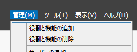
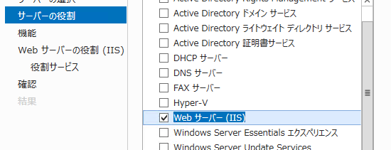
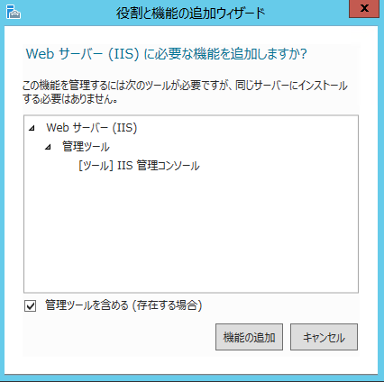
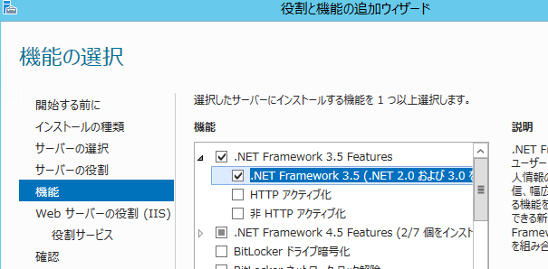
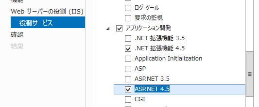
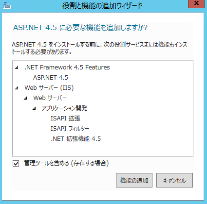
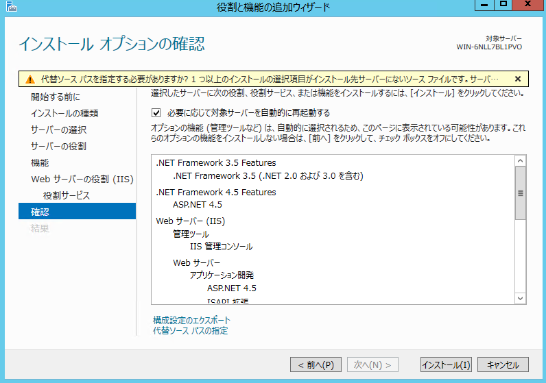

IISのセットアップ¶
Webサーバーの役割を担う、IISをセットアップします。SitecoreはIIS上のサイトとして動作します。
役割と機能の追加¶
サーバーマネージャーを起動して、役割と機能の追加 を選択します。

役割と機能の追加ウィザードが始まります。デフォルトのまま**次へ** をクリックして進めていき、サーバーの役割で、 Webサーバー(IIS)を選択します。

次のようなポップアップダイアログが表示された場合は、機能の追加 をクリックします。

機能の選択画面で、.NET Framework 3.5 を選択します。SQL Server 2014 をインストールするために.NET Framework 3.5 が必要です。

役割サービス画面で、 アプリケーション開発 > ASP.NET 4.5 を選択します。

下図のような、ポップアップダイアログが表示されたら、 機能の追加 を選択します。

インストールオプションの確認画面まで来たら、必要に応じて対象サーバーを自動的に再起動する にチェックして、インストール ボタンをクリックします。

インストールが完了したら、ダイアログを閉じます。
再起動は不要のはずですが、念のため再起動します。